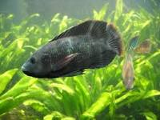

La mojarra es un termino que se utiliza comunmente para referirse a diferentes especies de peces de agua dulce que pertenecen a la familia Cichlidae. Estos peces son conocidos por su diversidad y se encuentran en diversas regiones tropicales y subtropicales de America, Africa y Asia. En este contexto, la descripción puede variar según la region y la especie especifica de mojarra a la que se haga referencia. En America Latina, y especialmente en paises como Mexico y Colombia, el termino "mojarra" se utiliza para referirse a varios tipos de peces de la familia Cichlidae que se encuentran en ríos, lagos y otros cuerpos de agua dulce. Estos peces son apreciados en la gastronomía local y se preparan de diversas maneras, siendo la mojarra frita una de las formas más comunes de disfrutarla. Cabe mencionar que, debido a la diversidad de especies de mojarra, las características físicas y el sabor del pescado pueden variar. En el contexto culinario, la mojarra suele ser un pescado blanco y de sabor suave que se presta bien para diversas preparaciones, como la fritura, el asado o la cocción al horno.
